Why this project
Static routes work, but they don't scale — every new subnet means a manual route added on every router that needs to reach it. This project starts from the working GRE tunnel built in the previous project and swaps its static routes for OSPF, so each router's LAN is learned automatically through the tunnel instead of typed in by hand.
Removing the static routes and starting OSPF
Remove Router3's static route
Deleted the static route to Router1's LAN and started router ospf 1 — clearing the old mechanism before introducing the new one, rather than letting both run at once and masking a misconfiguration.
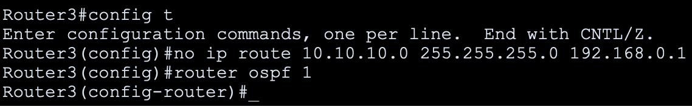
Remove Router1's static route
The mirrored cleanup on Router1 — static route removed, OSPF process started.
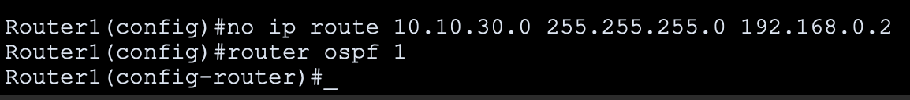
Advertising the LANs — and catching a mistake
First attempt uses the wrong wildcard mask
Advertised Router1's LAN with network 10.10.10.0 0.255.255.255 area 0 — a wildcard mask far too broad for a /24 network. OSPF accepted the command without complaint, which is exactly why this kind of mistake is easy to miss without testing afterward.
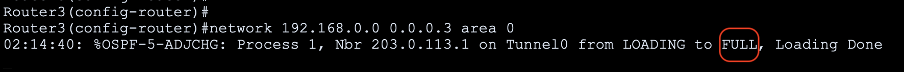
Fixed the wildcard mask
Reissued the command with the correct mask — 0.0.0.255 — matching the actual /24 boundary of the LAN.
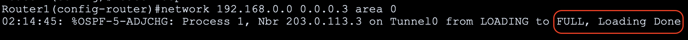
Confirming it doesn't work yet
Ping fails — 0% success
With only the LAN networks advertised so far, Router1 can't reach Router3's LAN at all. The two routers haven't formed an OSPF adjacency yet, because the network they actually share — the tunnel itself — hasn't been advertised into the process.
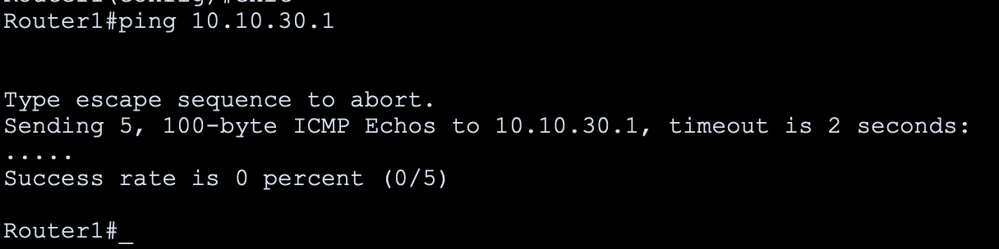
Advertise Router3's LAN
Added Router3's LAN to OSPF with the correct wildcard mask from the start — applying the lesson from Router1's mistake.
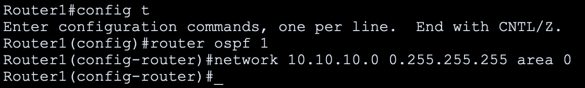
Advertising the tunnel network completes the picture
Router1 advertises the tunnel network
Adding network 192.168.0.0 0.0.0.3 area 0 — the tunnel's own transit network — immediately triggers an OSPF adjacency with Router3, reaching FULL state.
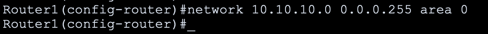
Router3 advertises the tunnel network
The same statement on Router3 confirms the adjacency from its side — both routers now agree they're OSPF neighbors across the tunnel.
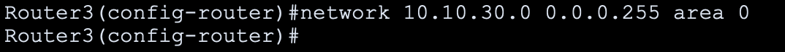
Verifying dynamic connectivity
Router3 reaches Router1's LAN
100% success — the route is now learned dynamically, not typed in by hand.
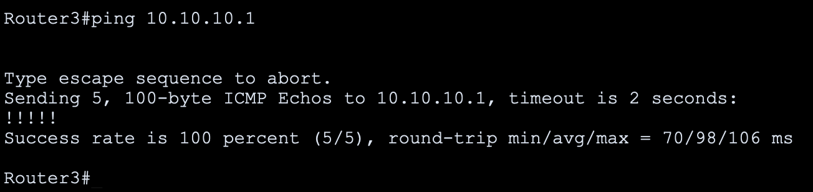
Router1 reaches Router3's LAN
Same result in the other direction — full connectivity restored, this time via OSPF instead of static routes.
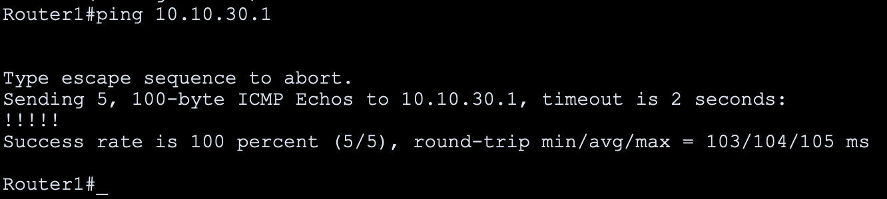
Confirm the route is dynamic
Router3's routing table now shows Router1's LAN with an O (OSPF) code instead of the S (static) code from the previous project — clear proof the route is being learned, not manually maintained, along with its OSPF cost and the interface it arrived on.
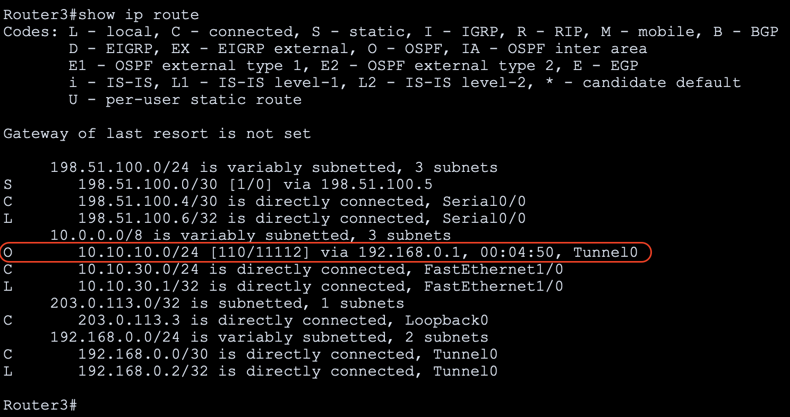
Result: the same two LANs from the original tunnel project are reachable again — but this time through a route OSPF discovered on its own. Testing after the first network statement caught a real misconfiguration (an oversized wildcard mask) before it could cause a harder-to-diagnose problem once more networks were added later.
What this demonstrates
- OSPF accepts an incorrect wildcard mask without any error — it will simply advertise the wrong scope silently. Testing behavior after configuration, not just checking that a command was accepted, is what catches this kind of mistake.
- Advertising the LAN networks alone isn't enough for two routers to become OSPF neighbors — the transit network between them (the tunnel itself) has to be included in the process too.
- OSPF adjacency state (FULL) is concrete proof that two routers have synchronized their link-state databases — a stronger signal than "the interface is up" or "a ping happened to work."
- Comparing the route code in the routing table (S for static vs. O for OSPF) is a fast, reliable way to confirm which mechanism is actually responsible for a route — useful anytime a network is migrating from static to dynamic routing rather than starting from scratch.